FIGSのスクラブ
アメリカ発の医療用ウェア。動きやすさと洗練されたデザインを両立し、長時間勤務でも疲れにくい着心地が魅力です。
FIGS公式HPを見る ↗Smart Nurse Lab / Favorite things
ナースグッズから日常生活用品まで。看護師の仕事と暮らしを豊かにしてくれるアイテムを、Smart Nurse Labの視点で集めました。

このページにはアフィリエイトリンクが含まれる場合があります。リンク先で購入された場合、Smart Nurse Labが紹介料を受け取ることがありますが、購入価格に追加費用はかかりません。掲載するのは、看護師の仕事と暮らしに本当に役立つと考えたものだけです。
アメリカ発の医療用ウェア。動きやすさと洗練されたデザインを両立し、長時間勤務でも疲れにくい着心地が魅力です。
FIGS公式HPを見る ↗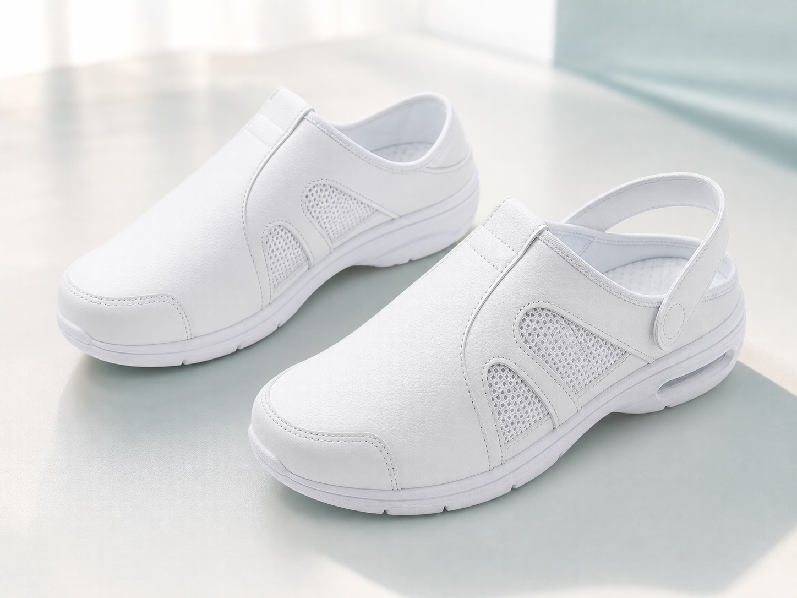
かかとを踏んでも履ける2Way仕様と、ゆったりした幅広4E。脱ぎ履きが多い現場でも使いやすい、定番のナースシューズです。
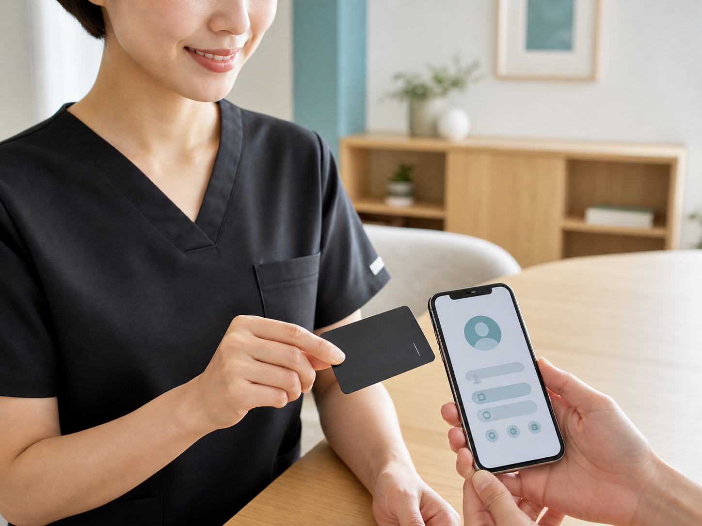
スマホにかざすだけで、連絡先・SNS・経歴をまとめて共有。応援ナースや訪問看護、転職などで仕事のつながりが広がる看護師に便利な一枚です。
Prairie Cardを見る ↗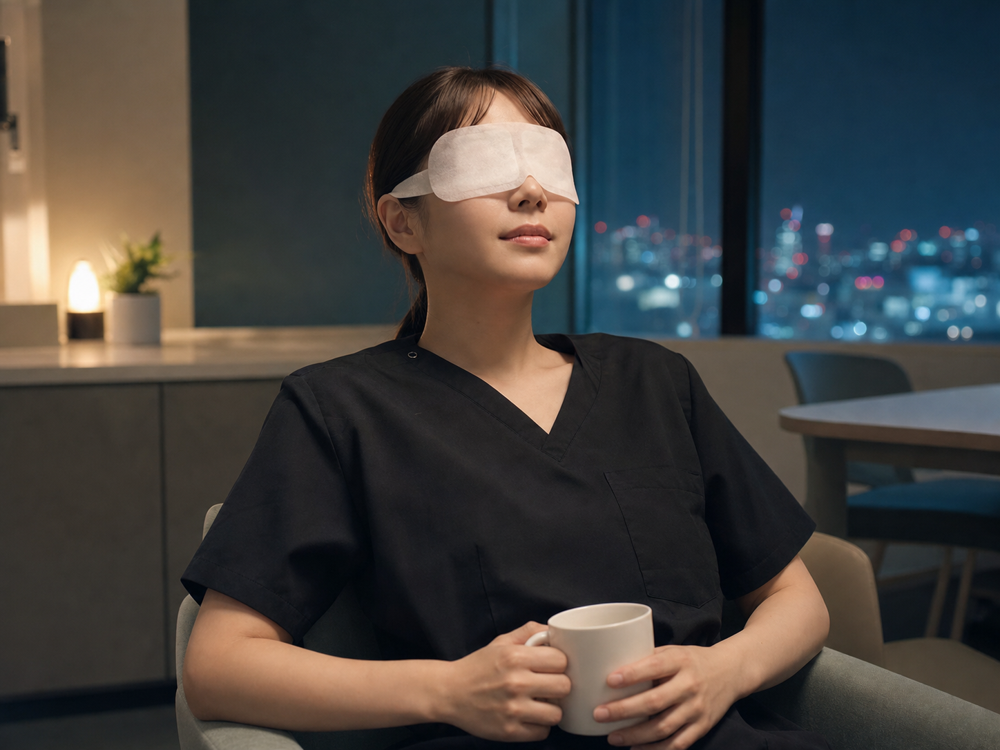
約40℃の蒸気が目元をやさしく包む、使い切りタイプ。まとまった仮眠が難しい夜勤でも、短い休憩で気持ちを切り替えたいときに。
Amazonで購入 ↗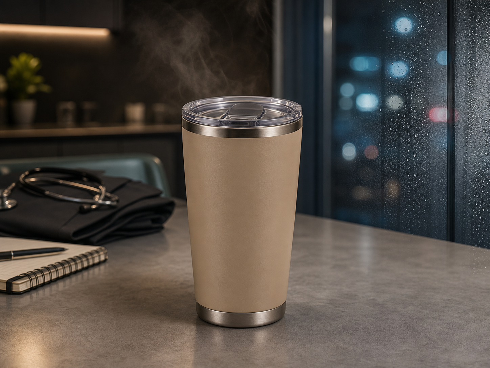
温かい飲み物にも冷たい飲み物にも使え、飲み頃を保ちやすいフタ付きタイプ。自宅から持参すれば、自販機で買う回数を減らす節約にも。
Amazonで購入 ↗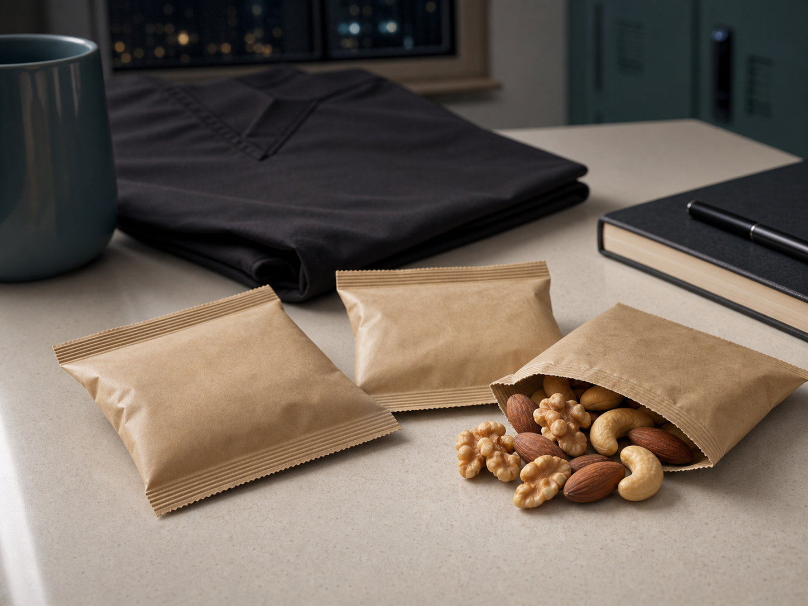
糖質に偏りやすい夜勤中の間食を、ナッツへ置き換える選択肢。無塩・油不使用の小袋なら持ち運びやすく、食べる量も調整しやすいのが魅力です。
Amazonで購入 ↗荷重を分散する肩紐で、毎日の通勤から1泊2日の小旅行まで活躍。PC収納やサイドポケットも備えた、デザインと収納力のバランスがよい万能バッグです。
無印良品公式を見る ↗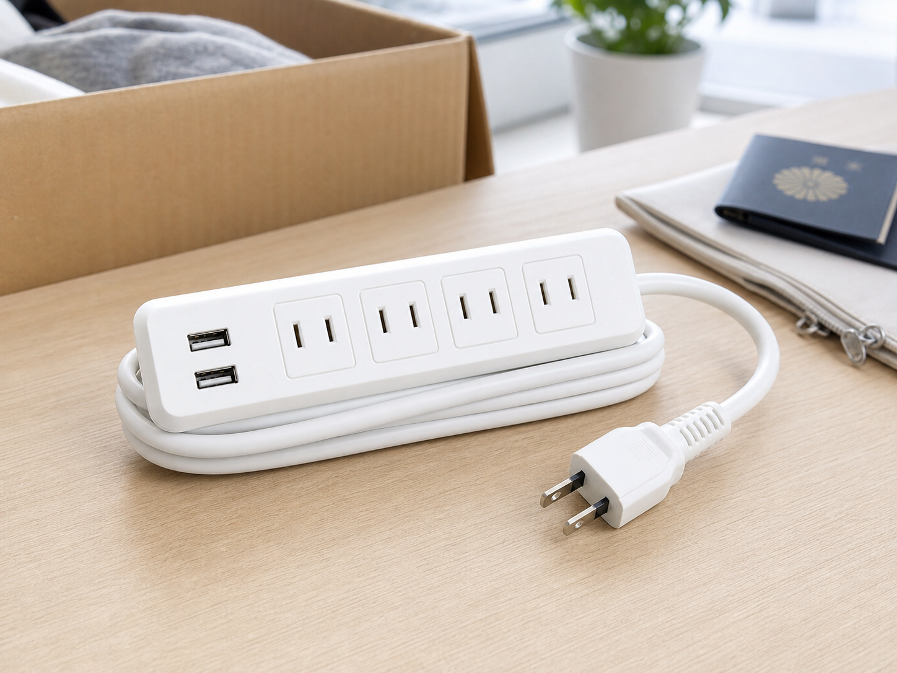
AC4口とUSB2ポートを備え、社宅や新居、国内外の旅行で一つあると便利。コードを本体に巻けて、荷物の中でもすっきり持ち運べます。
※変圧器ではありません。海外では接続機器の対応電圧と、渡航先に合う変換プラグをご確認ください。
Amazonで購入 ↗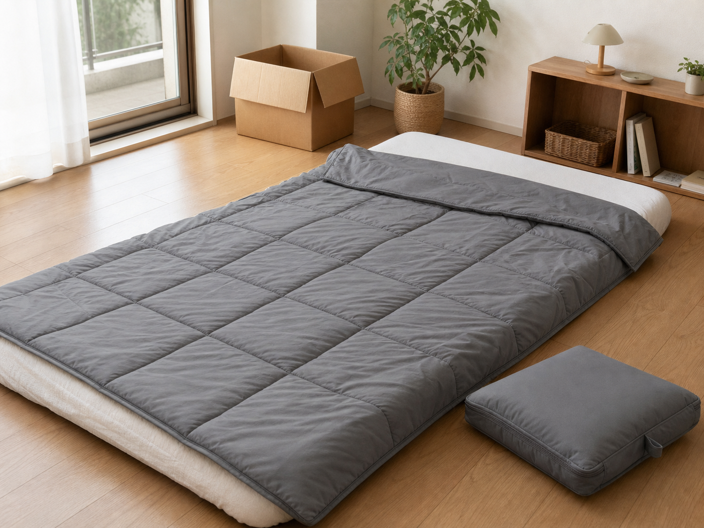
寝袋としてはもちろん、広げればブランケットや新居の簡易布団に。収納ケースへ収めればクッションになり、引っ越し直後からキャンプまで柔軟に使えます。
Amazonで購入 ↗スマホより広い画面で情報を見比べやすく、勉強、資料作り、副業までできることが大きく広がります。持ち運びやすく、学びと仕事の両方に使える一台です。
Apple公式HPを見る ↗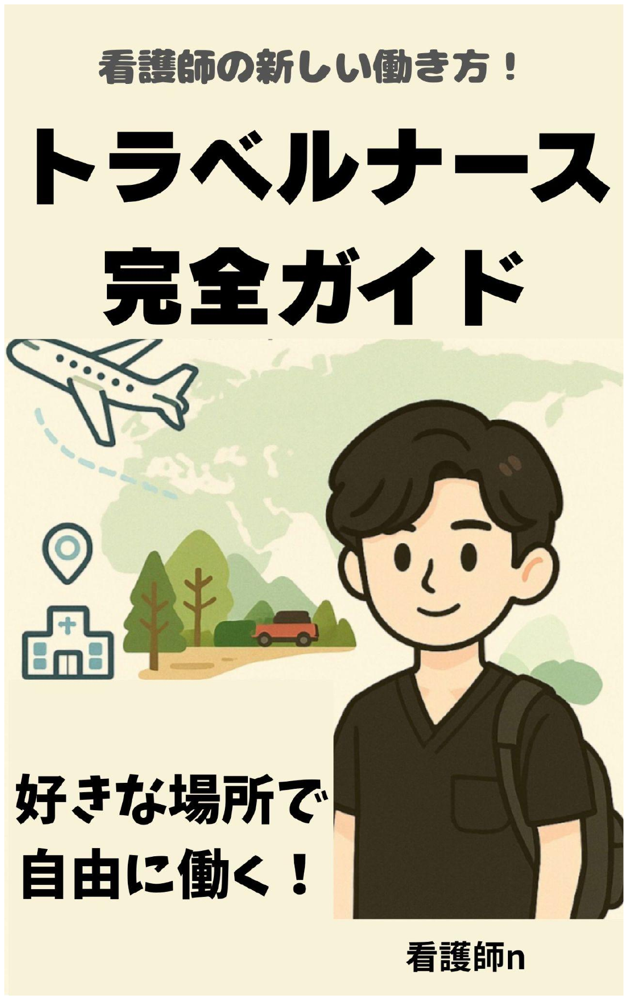
Smart Nurse Lab運営者が、自身の経験をもとに執筆。これから応援ナースを始めたい人が、働き方や準備を具体的にイメージするための実践ガイドです。
Amazonで購入 ↗質問への回答、要約、アイデア整理、資料のたたき台づくりまで、学びと仕事を支える対話型AI。まだ使っていない人も、まずは身近な疑問から試してみて。
※回答には誤りが含まれる場合があります。医療や試験に関わる重要な情報は、必ず一次情報をご確認ください。
ChatGPTを始める ↗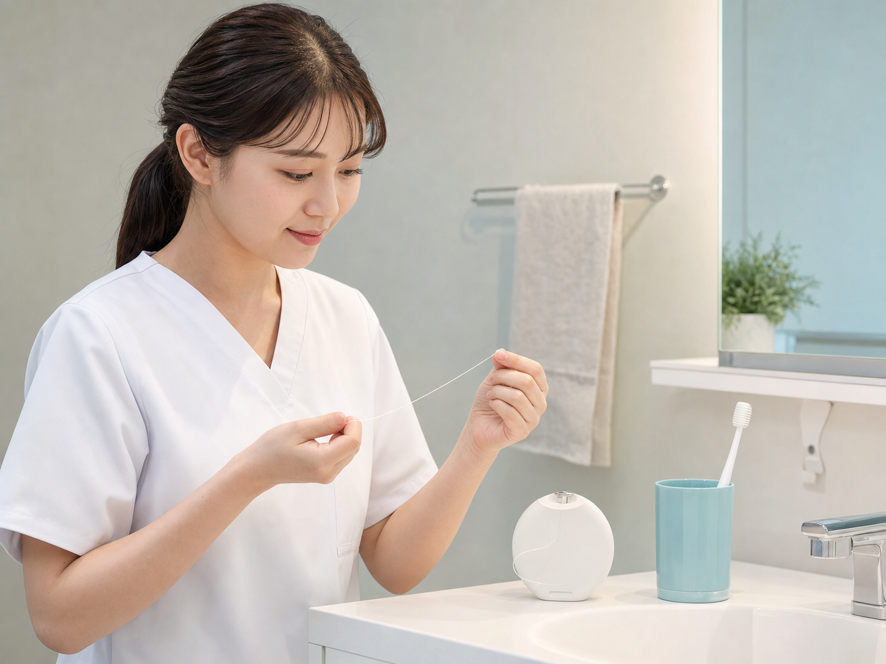
看護の現場で口腔状態の大切さを感じるからこそ、毎日の予防歯科を意識。歯ブラシだけでは落としにくい歯間の汚れを、やさしく絡め取るフロスです。
※使い方や自分に合う歯間清掃具は、歯科医師・歯科衛生士へご相談ください。
Amazonで購入 ↗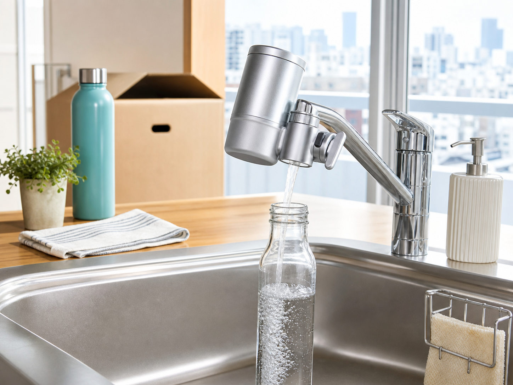
日本の水道水はそのまま飲めますが、味やにおいを整えたい人に便利なコンパクト浄水器。引っ越し先にも持ち運びやすく、ペットボトルの水を買う回数を減らす節約にも。
Amazonで購入 ↗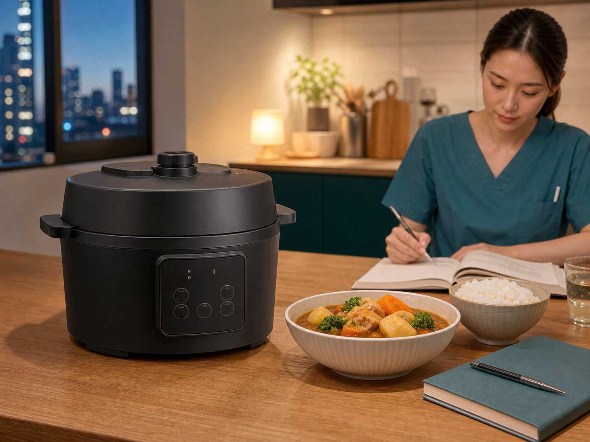
炊飯、鍋料理、煮込み、蒸し料理まで一台でこなす時短家電。調理に付ききりになる時間を減らし、勉強や趣味、休息に使える時間を増やします。
Amazonで購入 ↗